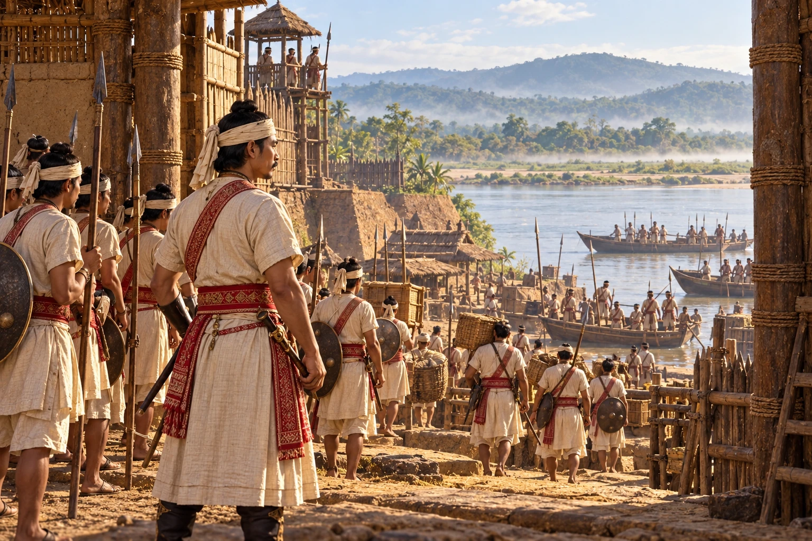

Jayadhwaj Singha Takes Guwahati
1658–1659 · Against the Mughal Empire

While Shah Jahan's sons fight for the Mughal throne, the Mughal faujdar abandons Guwahati. Jayadhwaj Singha's army occupies Kamrup and pushes the Koch king Pran Narayan back beyond Dhubri. This is the direct cause of Mir Jumla's invasion.
Sources disagree whether the Koches or the Ahoms entered Guwahati first. Depicts occupation by the king’s army, without asserting his personal presence in Guwahati.
Sources
People: Jayadhwaj Singha (Sutamla)
Open this scene in the interactive archive · Follow this event on MAP